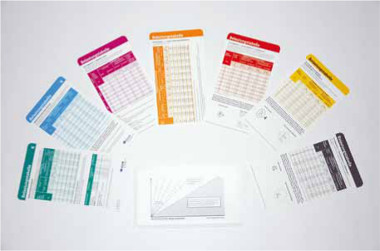

Trotz aller modernen Technik sind nicht alle Gefahren und Gesundheitsrisiken beim Transportieren von Lasten, beim Umgang mit Fahrzeugen, Kranen und Anschlagmitteln abzuwenden.
Wenn der technische Schutz nicht ausreicht, muss zumindest der Körper selbst geschützt werden. Besonders gefährdet sind beim Anschläger Kopf, Füße, Hände, Ohren und bei schlechter Witterung der ganze Körper.
Das Tragen von persönlichen Schutzausrüstungen ist in der Regel nur die drittbeste Lösung, denn zunächst ist der Unternehmer verpflichtet, geeignete Arbeitseinrichtungen bereitzustellen und Anschlagmittel zu beschaffen, von denen keine Unfall- und Gesundheitsgefahren ausgehen. Dabei ist die beste Lösung eine solche Arbeitsorganisation, bei der gefährliche Transporte gar nicht erst stattfinden.
Die nächste Möglichkeit besteht in der „nachträglichen Reparatur“ — also die Nachrüstung von Maschinen und Einrichtungen. Zum Teil wird in einigen Ländern verlangt, dass Lasten an textilen Anschlagmitteln zusätzlich durch Sicherungsseile oder Ketten gegen Absturz gesichert werden. Das ist naturgemäß sehr viel aufwändiger und gibt auch zusätzliche Probleme.
Wenn diese genannten Wege nicht eingeschlagen werden können, dann bleibt die dritte Lösung: Die persönlichen Schutzausrüstungen, um gesund und ohne Arbeitsunfälle den Arbeitsalltag zu bestehen:
Wegen der Anstoßgefahr, z. B. an den Kranhaken, beim Annehmen der Anschlagmittel, beim Gang durch Lagerregale, ist ein Industrie-Schutzhelm notwendig.
Überall, wo mit Kopfverletzungen zu rechnen ist, müssen Arbeitsschutzhelme zur Verfügung gestellt und getragen werden.
Durch herabfallende Gegenstände, und sei es nur der Aufhängering einer Anschlagkette oder eine Blechhebeklemme, sind die Zehen gefährdet. Da der Anschläger auf die Last, den Kranfahrer und viele andere Dinge achtet, können die Zehen durch Anstoßen an spitze und scharfe Gegenstände verletzt werden. Deshalb sind Sicherheitsschuhe mit Schutzkappen erforderlich. In Bereichen, in denen Beilagehölzer und Keile auch vernagelt werden, sind Sicherheitsschuhe mit durchtrittsicheren Sohlen zu tragen.
In Bereichen, die als Lärmbereiche gekennzeichnet sind, ist Gehörschutz zu benutzen. Geeigneten Gehörschutz stellt der Unternehmer zur Verfügung.
Beim Umgang mit Anschlagmitteln werden immer wieder Handverletzungen verursacht, z. B. durch abstehende Drähte bei Seilen.
Auch wenn scharfkantige Werkstücke angefasst werden müssen oder aber die rohen Beilagehölzer und Keile mit ihren Holzsplittern, ist ein Handschutz durch geeignete Schutzhandschuhe notwendig.
Die neu gestaltete Unfallverhütungsvorschrift „Grundsätze der Prävention“ (BGV A1) fordert in ihrem § 23 „Maßnahmen gegen Einflüsse des Wettergeschehens“:
„Beschäftigen Unternehmer Versicherte im Freien und bestehen infolge des Wettergeschehens Unfall- und Gesundheitsgefahren, so hat er geeignete organisatorische Schutzmaßnahmen zu treffen oder erforderlichenfalls persönliche Schutzausrüstungen zur Verfügung zu stellen.“
In vielen Fällen wäre die Überdachung von Lagerplätzen eine gute Hilfe, sie erfordert jedoch hohe Investitionen und bei der Entladung von Schiffen, Eisenbahnwaggons oder Lkws ist es nach wie vor üblich, diese Arbeiten im Außenbereich durchzuführen.
Geeignete Schutzkleidung zeichnet sich durch hohe Schutzwirkung bei bestmöglichem Tragekomfort aus. Entsprechend den verschiedenen Aufgaben des Anschlägers kann ein Maschinenschutzanzug mit einer Außentasche für den Maßstab zur Feststellung der benötigten Stranglängen sinnvoll sein oder aber ein Wetterschutzanzug, damit die Kleidung vor Wärmeverlust schützt und Schweißdämpfe nach außen durch die Textilien austreten können.
Wenn es, z. B. im Außenbereich mit Lastwagenverkehr, darauf ankommt, dass Personen nicht übersehen werden, ist sogar Warnkleidung zu empfehlen, damit der Mensch beim Arbeiten deutlich gesehen wird.
Zur vollständigen Ausrüstung eines Anschlägers gehören auch die von der Berufsgenossenschaft herausgegebenen Belastungstabellen für Anschlagmittel (Bild 1-1). Diese Karten in einer Plastikhülle können leicht in der Brusttasche des Arbeitsanzuges mitgeführt werden. Damit steht ein schnelles Hilfsmittel zur Verfügung, um für die verschiedenen Anschlagmittel und Anschlagarten die jeweilige Tragfähigkeit zu ermitteln und die Winkel mit Hilfe der Rückseite der Kunststoffhülle zu bestimmen.
Das hilft bei schlecht erreichbaren Kennzeichnungsanhängern und wenn die Tragfähigkeit des zunächst vorgesehenen Anschlagmittels bei der notwendigen Anschlagart nicht ausreicht und ein anderes Anschlagmittel ausgewählt werden soll. Die Suche nach einem geeigneten Anschlagmittel ist mit diesen Karten etwas einfacher. Die Belastungstabellen für Chemiefaserhebebänder und Rundschlingen berücksichtigen auch die Anschlagwinkel beim Einsatz von zwei Hebebändern oder Rundschlingen.
Die Karten sind abgestimmt auf den heutigen Bestand der meist in den Betrieben vorhandenen Anschlagmittel. Neuentwicklungen, z. B. Ketten Güteklasse 8 mit erhöhter Tragfähigkeit (8S, 8E etc.) und Güteklasse 10, sind bis zur Vorlage eines Normentwurfs noch nicht berücksichtigt.
Gleiches gilt für Natur- und Chemiefaserseile nach den europäischen Normen und Bemessung nach dem Anhang I der Maschinenrichtlinie. Eine Anschlagseilnorm für diese Seile liegt seit 9/2004 vor. Es gilt der Tragfähigkeitsanhänger.

Bild 1-1: Belastungstabellen für Anschlagmittel